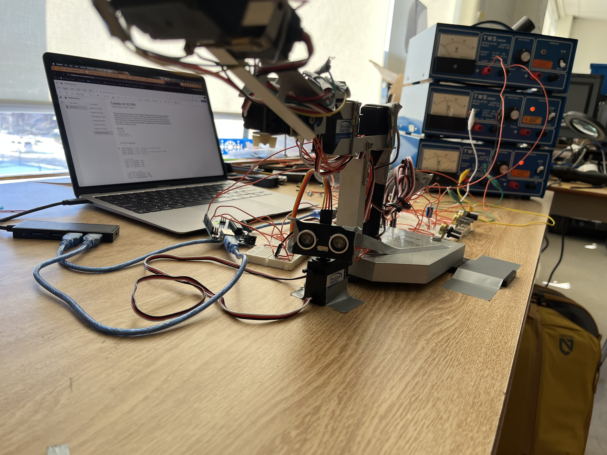

RADAR TRACKING ARM
Automated object detection · Dual Arduino system
AUTOMATED OBJECT DETECTION

The system uses an ultrasonic distance sensor to detect objects within a fixed range. As the scanner sweeps, it checks distance readings in real time and flags any object closer than 25 cm. Once an object enters that range, the scan pauses and the system switches from searching to tracking. Detection only clears after a full sweep confirms the area is empty, which prevents false resets.
SCANNING MECHANISM

A servo-mounted ultrasonic sensor performs a controlled sweep between 35° and 140°. The scan moves in small angle steps to improve accuracy. When an object is detected, the scanner continues in the same direction to find both edges of the object. It then calculates the center angle of the object based on those edges. This center angle is used as a precise target for the robotic arm.
ROBOTIC ARM CONTROL

The robotic arm is driven by four servos controlling base rotation, vertical movement, claw actuation, and wrist rotation. Manual control comes from potentiometers, allowing direct user input. When an object is detected by the scanner, the base rotation servo overrides manual input and locks to the detected target angle. The claw includes pressure sensors that prevent over-closing, stopping movement when grip force exceeds a safe limit.
COMMUNICATION SYSTEM
Two Arduinos communicate over serial at 9600 baud. The scanner sends formatted messages that include object detection states and angles. When an object is found, the scanner sends a DETECTED:
TECHNICAL IMPLEMENTATION
Mechanical Assembly
The mechanical structure uses aluminum extrusions for the base frame with 3D-printed brackets for sensor and servo mounts. Four servo motors are precisely positioned to control the arm's degrees of freedom, while the ultrasonic sensor is mounted on a scanning servo with a limited range to optimize detection area coverage.
Key Components:
- Base: Fixed plastic base
- Servos: 4x High-torque digital servos (25kg/cm)
- Sensor: HC-SR04 Ultrasonic with servo mount
- Gripper: Custom 3D-printed claw with pressure sensor
Scanner Control Logic
// Find object edges by continuing scan
int startAngle = angle;
int endAngle = angle;
while(true) {
angle += (stepSize * direction);
if (angle > maxAngle || angle < minAngle) {
break;
}
myServo.write(angle);
delay(moveInterval);
long checkDist = getDistance();
if (checkDist > 0 && checkDist <= 25) {
endAngle = angle;
} else {
break; // Lost object - found edge
}
}
// Calculate center
int centerAngle = (startAngle + endAngle) / 2;
Serial.print("DETECTED:");
Serial.println(centerAngle);
When an object is detected within range, the scanner continues sweeping in the same direction to locate both edges. By tracking where the object starts and ends, the algorithm calculates the precise center angle. This center point is then transmitted to the arm for automatic targeting, eliminating the need for manual angle calculations.
Arm Control & Gripper
// Check for scanner data
if (Serial.available() > 0) {
String data = Serial.readStringUntil('\n');
if (data.startsWith("DETECTED:")) {
int rawAngle = data.substring(9).toInt();
targetAngle1 = constrain(rawAngle + scannerOffset, 0, 180);
useScanner = true;
}
else if (data == "CLEARED") {
useScanner = false;
}
}
// Use scanner or manual control
if (useScanner && targetAngle1 != -1) {
angle1 = targetAngle1;
} else {
angle1 = map(analogRead(pot1Pin), 0, 1023, 0, 180);
}
// Pressure limiter for claw
if (pressureTooHigh && angle3 < lastAngle3) {
angle3 = lastAngle3; // Stop closing
}
The arm switches between manual and autonomous control based on scanner input. When an object is detected, the base servo automatically aligns to the target angle, overriding potentiometer input. The pressure sensors continuously monitor gripper force and prevent over-closing by stopping downward movement when the force limit is exceeded, protecting both the object and the mechanism.
Serial Communication Protocol
void checkSerialData() {
if (Serial.available() > 0) {
String data = Serial.readStringUntil('\n');
data.trim();
if (data.startsWith("DETECTED:")) {
int rawAngle = data.substring(9).toInt();
targetAngle1 = constrain(rawAngle + scannerOffset, 0, 180);
useScanner = true;
Serial.print("Scanner locked at: ");
Serial.println(targetAngle1);
}
else if (data == "CLEARED") {
useScanner = false;
Serial.println("Scanner cleared - manual control restored");
}
}
}
Protocol Specifications:
- Baud Rate: 9600
- Messages: DETECTED:<angle>, CLEARED
- Data Format: ASCII text with newline delimiter
The message-based protocol is intentionally simple and robust. The scanner sends angle data only when an object is confirmed, reducing noise and communication overhead. The CLEARED message restores manual control immediately, ensuring the operator always has fallback control. This approach prioritizes reliability over speed.
Performance Specifications
Detection Range
2cm - 400cm (typical; varies with object material and surface)
Scan Speed
~5 seconds for full 105° sweep at standard resolution
Arm Reach
35cm maximum with full extension
Response Time
<500ms from detection to gripper alignment
Grip Force
Sensor rated 5kg; safety limit set at 700g (ADC value 750)
Serial Communication
9600 baud, message-based protocol with newline delimiters